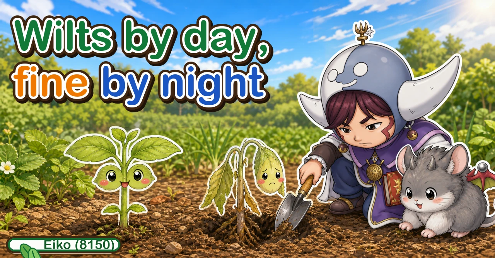
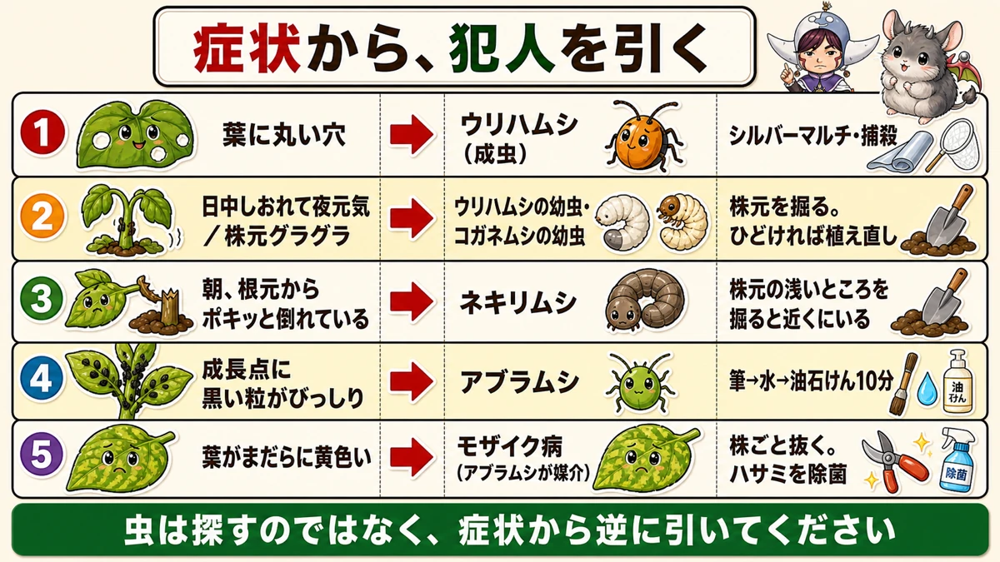
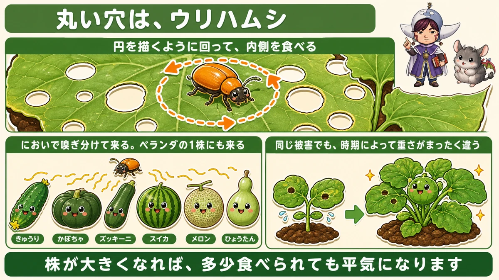
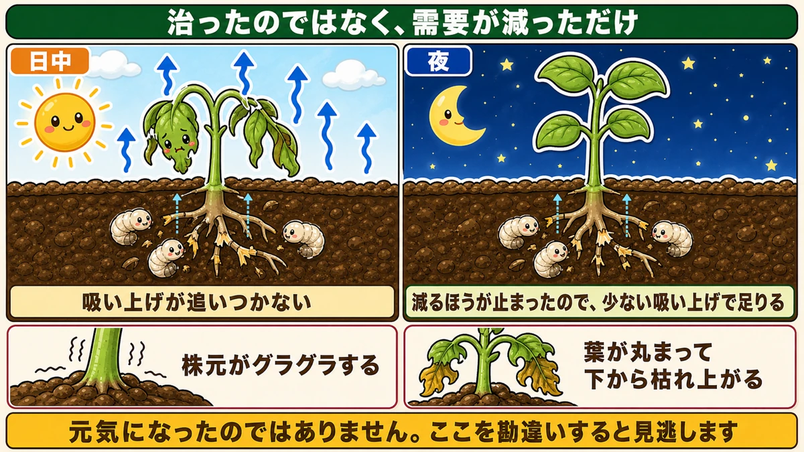
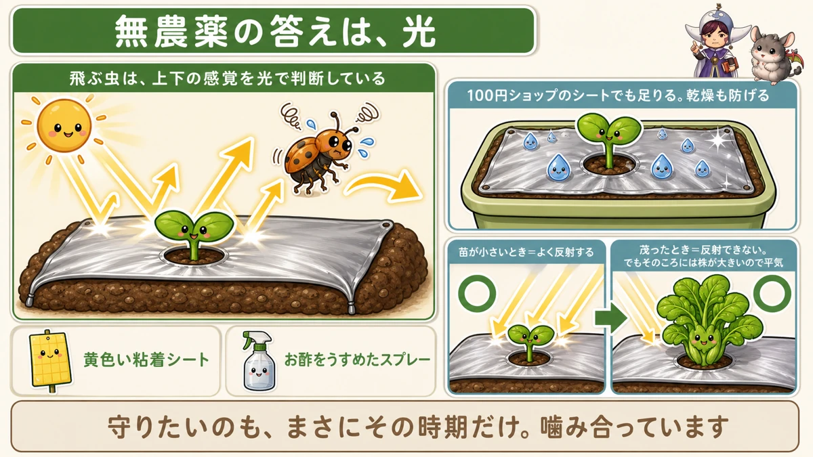

Wilting by day, fine by night 🐛 Something is eating the roots

🗨️ "There are round holes in the leaves."
🗨️ "One plant just looks unhappy."
🗨️ "I came out this morning and a seedling had fallen over at the base."
Hello, I'm Eiko. Eight years of growing vegetables organically and without pesticides, and a teaching licence in science.
Mid spring is when young plants are at their most vulnerable — and it's when the insects start moving.
The difficulty is that looking for the insect is genuinely hard. They're small, they hide, and some only come out at night.
The point, up front:
Don't look for the insect. Work backwards from the symptom.
Round holes in a leaf narrow it to one culprit. A plant that wilts in the sun and recovers at night tells you something is happening below ground. Each symptom has its own suspect ☺️

What this diagram says （図解の文字）
- Working back from the symptom to the culprit
- 1 round holes in the leaves → cucumber beetle (adult) — reflective mulch, or pick them off
- 2 wilting by day, fine at night / loose at the base → cucumber beetle larvae, chafer grubs — dig at the base; replant if it's bad
- 3 snapped off at the base in the morning → cutworms — dig shallowly at the base and they're nearby
- 4 growing point… → aphids
Why this is only about now
Something to say first: all of this applies only while the plants are small.
Once a plant is established, losing some leaf doesn't matter — there are plenty of leaves and photosynthesis continues.
But a newly planted seedling has four leaves. Lose two and its photosynthetic capacity has halved.
The same damage weighs completely differently depending on when it happens.
So concentrate on this stretch. Conversely, once the plants bulk up you can stop being anxious. You can't eliminate insects and you don't need to.
Symptom ①: round holes in the leaves

What this diagram says （図解の文字）
- Round holes mean the cucumber beetle
- It walks round in a circle and eats the inside of it
- It finds plants by smell. It will find a single plant on a balcony
- Cucumber ／ squash ／ courgette ／ watermelon ／ melon ／ gourd
- The same damage weighs differently at different times — once the plant is big, some grazing is harmless
Holes as neat as if drawn with a compass.
That is almost certainly the cucumber beetle — a small orange beetle about 7 mm long.
Its feeding has a signature: it walks a circle and then eats out the inside of it, leaving a round hole.
Round holes: assume this beetle and you'll be right.
If you grow cucurbits, it will come
- Cucumber, squash, courgette, watermelon, melon, gourd
And it locates them by smell. One plant on a balcony, a long way from any allotment, and it still arrives.
It eats flowers and fruit too
Attention goes to the leaves, but flowers and fruit are also on the menu. It prefers leaves, so that's usually what you see — but grazed fruit skin spoils the look of a crop, which is reason enough to act if you want clean produce.
Symptom ②: wilting by day, fine by night

What this diagram says （図解の文字）
- It hasn't recovered — demand has fallen
- Daytime: uptake can't keep up
- Night: the losing side has stopped, so reduced uptake is enough
- Loose at the base ／ leaves curling and dying from the bottom up
- It hasn't got better. Misread this and you miss it
One plant looks unhappy. You come back in the evening and it's standing up perfectly well.
That is the classic sign of root damage.
Why it happens
By day it's warm and water evaporates fast from the leaves. Healthy roots replace it.
But chewed roots can't keep up — so the plant wilts.
After sunset evaporation stops. With the losses gone, even reduced uptake is sufficient, and the plant looks fine.
It hasn't recovered; demand has dropped. Misread that as "it got better" and you miss the problem entirely.
The larvae are worse than the adults
Counter-intuitively, cucumber beetle larvae do more damage than the adults.
The adults lay eggs in the soil at the base of the plant, and the grubs that hatch eat the roots and the stem base.
The damage period runs right through the warm months — exactly overlapping the summer crops.
Two more signs
The plant is loose at the base. Neighbouring plants stand firm and this one rocks when you touch it. Roots and stem base have been eaten away and the support is gone.
Leaves curl and die from the bottom up, because water isn't reaching them.
Dig and look
If you suspect it, scrape a little soil away at the base.
You may find the stem base crumbling, with holes and cavities in it, and small white grubs inside.
In one case I read about, dozens of grubs only a few millimetres long were inside a single plant. That something that small kills a plant that size is genuinely surprising.
Once it's loose, replant
Honestly: a plant whose roots and stem base have been eaten to the point of rocking will not recover. It can't take up water or nutrients, and it will die.
Cut your losses early and put a new plant in — it's faster in the end. At this point in the season there's still time to replant, which is precisely why finding it now matters.
Symptom ③: snapped off at the base in the morning
A seedling that was fine yesterday, lying over with a clean break at soil level.
Cutworms — the larvae of various noctuid moths, active at night.
They bite through the stem at the base — apparently less to eat the stem than to fell the plant and eat the leaves once they're down.
They're right there
When you find a felled plant, dig shallowly around its base.
Cutworms don't travel. They're usually curled up within about 10 cm, just under the surface. They sit still in the soil all day, so a morning search finds them.
Remove it and the damage in that area stops.
Symptom ④: dark specks at the growing point
Small black or green specks packed round the new growth. Aphids.
The method: brush off → wash off → soap-and-oil spray for ten minutes.
And the key: don't treat it as a one-off. There are always survivors, so take them off every time you look.
Aphids carry disease
The thing not to forget: aphids carry mosaic virus.
Leaves go blotchy yellow and growth stops. Being a virus, there's no cure — pull the whole plant when you find it.
And wipe any blade you used with alcohol. Cut the next plant without doing so and you'll be distributing the disease yourself.
The no-spray answer is light

What this diagram says （図解の文字）
- Without sprays, the answer is light
- A flying insect judges up from down by light
- Yellow sticky traps ／ diluted vinegar spray
- A cheap silver sheet is enough — and it stops the soil drying out
- ○ while the plant is small = good reflection ／ ○ once it's bushy = no reflection, but by then the plant is big enough not to care
- The period you want to protect is exactly the period it works. The two fit
Reflective mulch
For the cucumber beetle without pesticides, this is the reliable one.
Lay silver-surfaced mulch. It reflects sunlight and the beetles won't come near.
The mechanism: a flying insect works out which way is up from where the light is. With light coming from below as well, it can't tell which way the sky is, and won't land.
For containers, a cheap sheet
If a full mulch is overkill, a silver sheet from a pound shop works. Lay it on the compost surface — same effect, and it reduces drying out as well, which makes summer watering easier.
"Only works while they're small" is the right amount
One caveat: once the plant bushes out, the leaves block the light and the reflection stops working.
Which is fine. By then the plant is big enough that grazing doesn't matter.
Reflective mulch is a tool that works while the plant is small — and the plant only needs protecting while it's small. The two line up.
Other options
- Yellow sticky traps — flying insects land and stick
- Diluted vinegar spray — they navigate by smell, so you answer with smell
Neither is a pesticide, and they combine.
To sum up
- ✅ Work back from the symptom rather than hunting the insect
- ✅ This only matters while plants are small — four leaves minus two is half the photosynthesis
- ✅ Round holes = cucumber beetle, which eats in circles
- ✅ It finds cucurbits by smell, even a single balcony plant
- ✅ It eats flowers and fruit too
- ✅ Wilting by day, fine at night = root damage
- ✅ Because evaporation stops at night, not because it recovered
- ✅ The larvae are worse than the adults; they eat roots and stem base
- ✅ Also: loose at the base, leaves curling and dying bottom-up
- ✅ Containers suffer most — nowhere to disperse
- ✅ Once it rocks, replant
- ✅ Snapped at the base in the morning = cutworm, curled up within 10 cm
- ✅ Winter rough digging reduces spring cutworm damage
- ✅ Specks at the growing point = aphids. Brush, wash, soap for ten minutes
- ✅ Aphids carry mosaic virus; disinfect blades between plants
- ✅ Reflective mulch works because insects judge up by light
You don't have to do all of it. Go out at midday and look for the one plant that's wilting. Then go back in the evening. If it's standing up, you've found something 🐛
Thank you for reading!